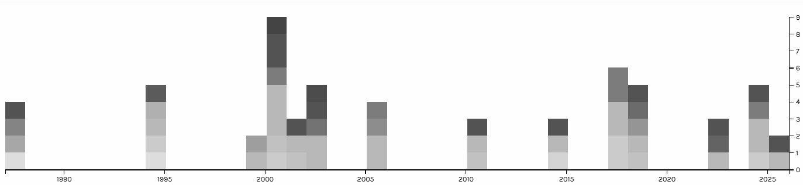

Then check out this little shelf. This collection of various works tells a lot about cyber security and hackers. And this will give you as much information as possible that I could find about each piece. Down below you'll find some fun little details about the collection.
This is the shelf at my university library that started everything on this pageThis web graph shows which cyber security media tags can be found in relaytion to the shelf This graph shows what cyber secruity media authors focused on for their
created media

This graph shows which cyber security media tags were relevant in each year regarding this library shelf